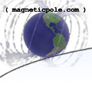
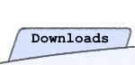

Tips and strategies for Age of Mythology: The Titans.
:: Games :: Age of Mythology :: Tips
|  |  | |
||||
Tips and strategies for Age of Mythology: The Titans. |
||||||
:: Games :: Age of Mythology :: Tips |
||||||
 |
Pete's AOM tips, gathered from around the web:
Many of these tips I have edited for clarity, content, or grammar. I have tried to make the tips as strategy and civilization-independent as possible. The original author or source of the tip is always listed to the left of the tip itself. I have ordered the tips in my opinion of their importance (both because the tip is often forgotten or not seen, or because it holds greater weight than the lower listed tips). Although I'm not as good a player as many of the people writing these tips, in most cases I can look back at my games and see which tips I didn't follow that cost me the game. AOMH:NoFx__P3N3M4:
Upgrade Your Economy -
Economic upgrades are essential in any game. Very simply, they make the
difference between having 100 villagers vs having 60, yet gathering the same
amount of resources. The actual basis of getting economic upgrades is very simple.
If both players have an equal amount of villagers, one with economic
upgrades and the other without, who will be gathering more? The one with the economic
upgrades. In general, who will have more military units by 10:00? The one with economic
upgrades. Late game, who will have a better economy with fewer villagers taking
up precious population? I think you know...
AOMH:prankster959:
Retreat and Play it Safe -
Most inexpierenced players fight battles no matter what the outcome may be.
If you know that you will lose, it is best to retreat. Even if they have less
troops than you, but their troops counter all of yours, it is still better to
retreat because they are gaining a lot more from the battle in terms of
resourses spent vs your resources lost. Sometimes even
when you have the advantage, it is best not to fight. An example would be when
you have forgotten to set up a market and you know you will not have any gold
coming in any time soon. The best thing to do in this scenario is play
defensively with your current army until you can fund reinforcements.Where exactly do you retreat to? Ideally, you have better defenses at your first town center, so go there. If you have a defended forward base, or a second town center, they also make good defensive holds. Optionally, an ally's town center, army, or forward base can be good too, just be sure to notify your ally quickly. It's best if you have enough men to keep the fight near to your barracks so that you can constantly flood troops into battle, while the enemy troops must run from across the map. If the opposing army presses into your defenses, pull back farther so that your town center and towers can cause the most damage to their troops. Retreating is even more important against the norse, were your losses change into more favor for your opponent. AOMH:prankster959:
Know Which Buildings to Attack -
So the opponent's army is someplace else or dead, the villagers are hiding,
and all that's left to your army is buildings. Which buildings should be
taken out first?
Time and time again, I see beginners gather all their troops, and command
them to go straight to the town center and take it down. This is a bad idea.
There is no way you are going to be able to take an equal enemy's town center
early unless you have god powers, of which he always has his to counter yours.
Go for undefended buildings around the outside first, and things that must
be taken down. An example would be a tower that is attacking your men.
Early game, killing the opponent's barracks will slow down his military
production to ensure that you keep the upper hand. Later, houses will perform
the same effect by lowering the opponent's maximum population.
Don't waste time on buildings that your opponent isn't going to use anymore,
such as granaries. However, if the opponent is actively using the economic
building, destroying it fast can disrupt his villagers to be more easily killed.
When your army is in the range of tower fire, a tower should almost always be
taken out first. Finally, when the opponent is trapped with little place else
to go, go for the town center to finish them off.
AOMH:prankster959:
Always Have Siege -
An army can take down buildings, but siege was designed for it. Siege is also
the best meatsheild ever. Why? Every time someone sees a catapult on the
screen, the first thing they do is tell all melee units to attack it (provided
it is attacking their buildings). All you have to do is move the siege unit
back a little bit and pick of their worthless melee units with your archers.
If you have a siege tower in front of your slingers, you have just bought a
few seconds before your slingers are even attacked. If it ever comes down to
it, siege are the best weapon in the game against titans. Siege usually
dictates who wins the game, and that is the number one reason for getting
to the heroic age in almost every game. Yes, certain myth units also do count
as siege in my book. In fact, myth unit siege is the best kind because they
cannot be countered by normal human units or arrow fire, only heroes.
AOMH:prankster959:
Always Have Myth Units and Heroes-
Myth units are the most cost effective units in the game, provided that you
keep them away from heroes. Even if you myth units are winning vs heroes,
they are losing out in the cost
it makes to build them compared to the cost of heroes. The perfect compliment
to myth units are ranged units. Always focus fire on heroes, and move your myth units
out of the way when a hero is attacking it.
With all of the myth units on the field, the only thing to counter them are heroes. Be sure to include some in your army as well. PeteVasi:
Have a Dynamic, Surprising Strategy -
Unless you know you're better than your opponent, you should have a plan
going into the battle. That plan will usually be thrown out so that you can
adapt to what your opponent has done to your original plan, but it will give
you a goal and a way to take down the enemy. When the original plan fails,
be adaptable to try to gain the advantage.
The best plans are those that catch your opponent by surprise. Nothing hurts
more than an attack in a completely unexpected location or at an unexpected
time. Siege sneaking into the back of a base almost always has this effect
on people.
AOMH:NoFx__P3N3M4:
Work With Your Allies -
Even though you don�t always have an ally,
when you do, work together with each other. Remember, you rely on
each other so one of your goals should be "Don�t let ally die," and
another should be "Don�t let ally down." Organize moves with your
teammate, two armies showing up at the opponents door are always
better than one. Too many 2 vs 2 games look too much like a couple
separate 1 vs 1 games on the same map. Mix those armies and deliver
a strong blow to one enemy. If you know what you're ally is building,
building units that compliment their army well is a good idea. God
powers can also be combined in clever ways to cause great damage.
AOMH:Tordenskiold:
Take the Initiative -
Force your opponent to react to your actions instead of you always having
to make counters to what he makes. That will leave you one important step
ahead and will make you the one that decides which direction the game will
take.
AOMH:NoFx__P3N3M4:
Aggression Wins -
Aggression is a little bit like carrots - you
throw in plenty and you get great eyesight and healing capabilities,
but if you throw in too much you�ll turn orange and get laughed at.
Aggression is very important when used in moderation. If your units
aren�t attacking or being used for some sort of attack, why did
you build them? To defend? Is defending your base the whole game
going to win you the game? No. Use your units to attack the
opponent�s economy. Remember, economy creates military, so if you take
out their economy they will have no military. The whole point of the game
is to kill your opponent�s civilization, and the only thing
standing in your way is the opponent�s army and/or buildings.
But, too much aggression is bad too.
Sending your army to attack just for the sake of attacking is, well,
stupid. Your goal should be to hurt your opponent, without sacrificing
yourself to do so. If your attack isn�t going to accomplish
anything, then don�t attack.
PeteVasi:
City Planning -
Although walls are often not used, or not used well, they do have a good
purpose. They force the enemy to go where you want them to go.
But there are many other buildings that need to be built, and are
often just placed randomly. They shouldn't be, they can make more
effective walls than unupgraded walls themselves can. Barracks can also be
placed close to the
town center so that in order for an army to attack them, they need to fall
under town center fire. Houses can be used around towers so that an enemy can't
get units close enough to damage them. Spaces between buildings can be filled
with small walls if you need to keep the enemy from entering.
AOMH:NoFx__P3N3M4:
Forward Build -
Having map control is great, but your military reinforcements
are useless if they have to walk all the way across the map to fight.
Forward building is what you need to do to truly establish map control. It
allows easy flooding right at the battlefield and even if you lose the
battle, your units will keep being built while your army
retreats. This allows easy beating back
of offensive moves because your units will be replenished on-site.
AOMH:prankster959:
Get the Right Town Centers -
Imagine your opponent builds a forward town center right outside your base.
What should you do? Well, the worst thing you could do is to attack his town
center and try to stop his advance. Under town center fire, you're bound to
lose more in the assault than he will. Instead, grab a
forward town center he has. Why? Well, he can't protect every settlement on the map, and
now you are taking an aggressive stance so that he will not be able to concentrate
soley on his forward base. Until heroic when you have siege, unless you
have some serious human firepower, it is best to take a empty settlemnt as a
town center when your opponent does the same thing instead of trying to destroy
his town center first. Why waste hundreds of
recources grabbing a settlement he has taken, when there are at least 3 other
available settlements on the map?
If you've scouted the map early and can see that there's one central
settlement, you can believe that that location will be the place for most future
battles. Get there early so that you have the defensive advantage.
AOMH:NoFx__P3N3M4:
Fish -
If there are fish available, always fish. More gatherers means
more resources, right? And if you can produce gatherers twice
as fast (boats at the dock, villagers at the town center), you
should get resources that much faster as well.
When I�m on water, I can build villagers with the food my
fishing accumulates. This means I eventually need no food
gatherers so I can have more wood and gold gatherers.
Living off of fishing will allow you to defend it more easily.
PeteVasi:
Nothing Idles -
Nothing should just sit there. If it is, why did you get it in the
first place? Resources gathered and unspent do you no good, build more
military or more barracks. Military just standing around is almost as useless.
Send a few out to scout the enemy's weak points, or places to kill villagers.
Stay aggressive and keep the enemy on their toes.
AOMH:prankster959:
Use Villagers as Defense -
Villagers are pretty
poor units, but they can make the difference in early battles in which
games can be decided. If you are being rushed, use villagers. Don't focus
them on myth units, but units that counter your main army. If
you both are hunting from the same food source, don't share it. Your villagers
are very selfish and greedy, and they want every last deer they can their
hands on. Kill any opposing villagers that are nearby. It will set you back,
but it will set them back more. Villagers are
useful as military units only in the early game, after that other troops are
too powerful and upgraded to lose to a petty villager. Keep in mind that
they are still great siege counters, and if you play your cards right
you can keep siege units from getting one hit at your buildings if you
obstruct their path enough.
AOMH:NoFx__P3N3M4:
Use Hotkeys -
The mouse isn�t as fast as you think -
There�s nothing funnier than hearing
a guy say his mousing skills are so good that he doesn�t need hotkeys,
then watching him crumble against an equally good player who uses hotkeys.
Hotkeys have and will always be faster than the mouse! Assign your own
special hotkeys, I have my own configuration and it works great.
AOMH:NoFx__P3N3M4:
Flood -
In the late game it�s all about flooding in huge battles.
The idea of flooding is to keep your pop at maximum and to keep your
military flowing so you will continuously have units to win the battle.
This is why you tend to lose in the opponent�s base even when the
only thing he has an advantage in is military buildings - he will
flood units to the battle and get reinforcements, while you will not.
In any age, it�s important to flood
military to the battle to keep your fight alive. Another good point
of flooding is that you can continuously replace your units with
different ones, allowing multiple counter-units to enter the field
at anytime. This is great in battles where you�re losing due to
the units you have. Your reinforcements all counter the units you�re
losing to. This is also a great reason to forward build, so that
your units don't have as far to walk to be in the battle.
| ||||||||||||||||||||||||||||||||||||||||||||||||||||||||||||||||||||||||
|
Copyright © 2020 by Pete Vasiliauskas.
All rights reserved. |